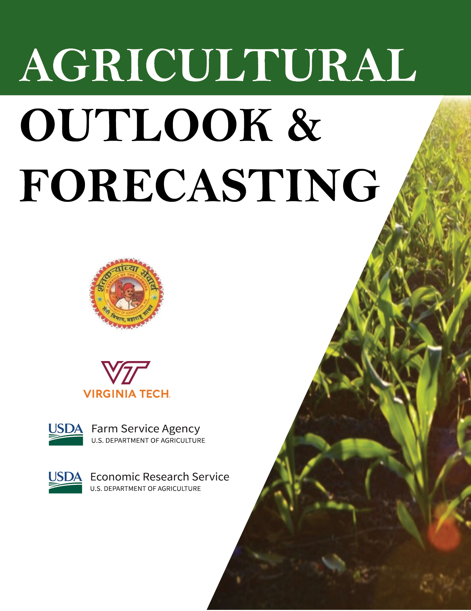

Agricultural Outlook & Forecasting
August 2023
Preface
 This training program is designed to enhance the technical skills and background knowledge of agricultural outlook analysts. This program is largely based on materials developed by Drs. Olga Isengildina Massa and Shamar Stewart over 2019-2023 as part of a cooperative agreement between Virginia Tech and Economic Research Service (ERS) of the United States Department of Agriculture (USDA) targeted at enhancing the quality, communication and sustainability of the USDA commodity outlook program.
Since 2021, the authors worked in collaboration with Foreign Agricultural Service (FAS) of the USDA to focus on more general materials that would be relevant for outlook analysts in the State of Maharashtra in India, as part of the State of Maharashtra Agribusiness and Rural Transformation (SMART) project. The objective of SMART is to support the development of inclusive and competitive agriculture value chains, focusing on small holder farmers and agri-entrepreneurs in Maharashtra. These training materials can be used to enhance technical capacity in agricultural outlook and forecasting.
These materials cover both conceptual and applied topics focusing on modern tools relevant to agricultural outlook. We demonstrate various approaches to forecasting and discuss the advantages and pitfalls of these methods.